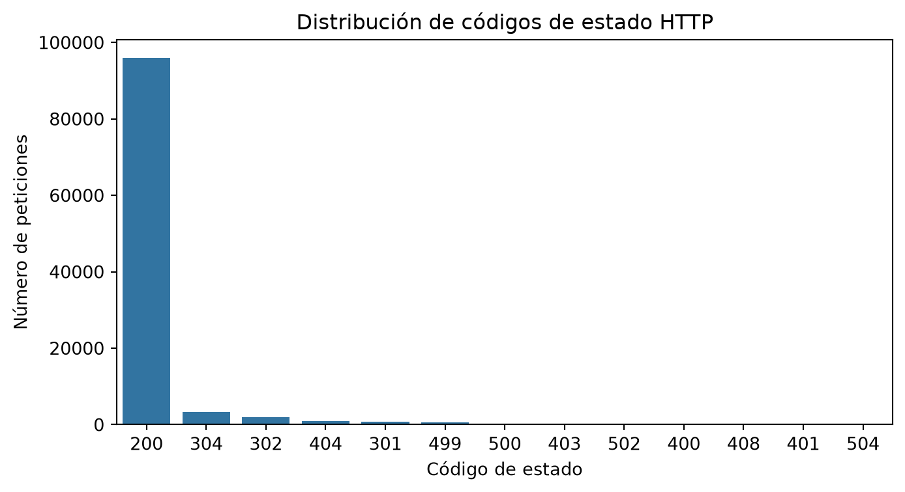
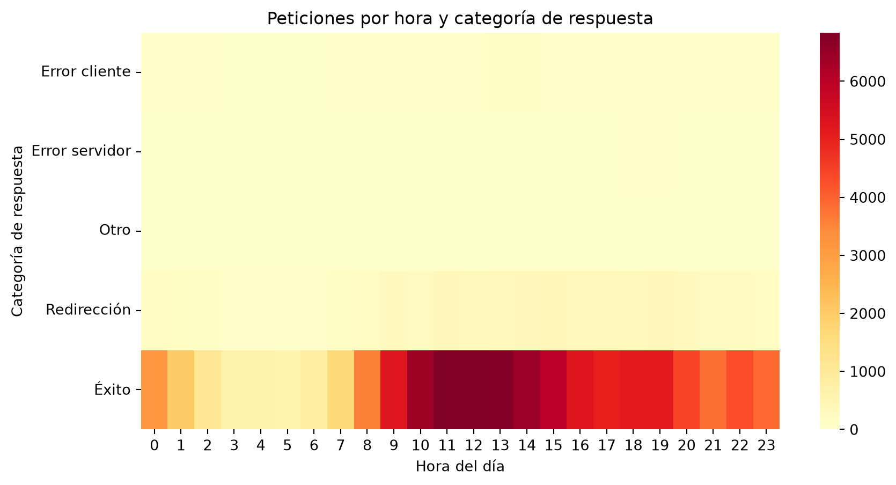

Análisis de logs de acceso de un servidor web con Pandas
Proyecto FBX · Trabajo 1 · 2º de ASIR
Autor/a
Fred Ruiz Guerrero, Bryan Fabricio Paucar Alvarado, Xiomara Isabella Valenzuela Maza
Fecha de publicación
4 de noviembre de 2026
1. Introducción y objetivos
1.1 Contexto
Un servidor web anota en un archivo de texto (el log de acceso) cada petición que recibe: quién la hace, cuándo, qué pide y si el servidor pudo atenderla. Para un administrador de sistemas, ese archivo es una fuente directa de información sobre el rendimiento, los errores y la seguridad del servicio.
En este trabajo analizamos con Pandas el log de acceso de una tienda online, siguiendo el método de un SysAdmin: limpiar los datos, explorarlos, hacer preguntas concretas y proponer acciones correctoras a partir de los resultados.
1.2 Preguntas que queremos responder
¿Cuándo hay más carga en el servidor y cómo se reparte a lo largo del día?
¿Qué proporción de peticiones termina en error y de qué tipo (cliente o servidor)?
¿Qué direcciones IP generan más tráfico o más errores y podrían ser abusivas?
¿Qué parte del tráfico procede de robots (bots) y cuál de usuarios reales?
¿Qué parte del tráfico procede de máquinas identificables por nombre (hostname)?
1.3 Herramientas utilizadas
Herramienta
Uso en el proyecto
Python y Pandas
Carga, limpieza, agrupación y análisis de los datos
Matplotlib y Seaborn
Gráficos estáticos
Plotly
Gráficos interactivos y animados
Quarto
Redacción del informe y generación de la web
Git y GitHub
Control de versiones, repositorio y publicación en GitHub Pages
2. Dataset
2.1 Origen, licencia y cita
El dataset Web Server Access Logs está publicado en Kaggle por eliasdabbas y procede de un conjunto de datos de Harvard Dataverse. Contiene 3,5 GB de logs en formato Nginx de una tienda online iraní. Su licencia es CC0 (dominio público).
Es un dataset adecuado para la administración de sistemas porque reproduce el trabajo real con logs de un servidor web: tráfico de usuarios, tráfico de robots, errores HTTP y posibles comportamientos abusivos.
2.2 Archivos y columnas
El dataset incluye dos archivos.
access.log (3,5 GB): una línea por petición. De cada línea extraemos estos campos:
Columna
Significado
ip
Dirección IP del cliente que hace la petición
fecha
Fecha y hora de la petición (con zona horaria)
metodo
Método HTTP (GET, POST…)
url
Recurso solicitado
protocolo
Versión del protocolo HTTP
status
Código de respuesta del servidor (200, 404, 500…)
bytes
Tamaño de la respuesta en bytes
referer
Página desde la que llegó el cliente
user_agent
Navegador o programa que hizo la petición
client_hostname.csv (13 MB): información adicional sobre los clientes.
Columna
Significado
client
Dirección IP del cliente (clave para unir con el log)
hostname
Nombre de la máquina asociado a esa IP
alias_list
Alias del nombre (en la mayoría de casos, Unknown host)
address_list
Lista de direcciones (casi siempre vacía)
2.3 Muestreo y justificación del tamaño
El log completo pesa 3,5 GB: no cabe en un repositorio de GitHub (límite de 100 MB por archivo) y es demasiado grande para procesarlo cómodamente en un ordenador personal. Por eso trabajamos con una muestra sistemática: una de cada N líneas, con N = 100 (sustituid por el valor real que hayáis usado). Tomar una línea de cada N, en lugar de las primeras líneas, reparte la muestra por todo el periodo del log. El script que la genera está en scripts/crear_muestra.py.
2.4 Tabla auxiliar de códigos HTTP
Para traducir los códigos de respuesta a su significado y agruparlos por categoría, usamos una tabla auxiliar propia (data/codigos_http.csv) con tres columnas: status, descripcion y categoria.
3. Carga y parseo del log
Cada línea del log es texto plano. Mediante una expresión regular separamos sus campos y los guardamos en las columnas de un DataFrame. Después convertimos los tipos de datos: la fecha a tipo fecha (en la hora local del servidor, Irán, UTC+3:30), el código de estado a entero y los bytes a número.
Qué se ve: (las IPs más activas y cuántas peticiones hacen).
Qué significa: (una IP con un volumen mucho mayor que el resto suele ser un robot o un comportamiento abusivo).
Qué haría un SysAdmin: (identificar a quién pertenece cada IP y valorar limitarla o bloquearla).
5. Combinación de datos (merge)
5.1 Unión del log con client_hostname.csv
Antes de combinar, exploramos el segundo archivo y eliminamos IPs repetidas para que cada IP aparezca una sola vez. Después unimos por la IP, conservando todas las peticiones del log (how="left"), y comprobamos que la relación es de muchos a uno (validate="m:1").
Qué se ve: (cada código aparece ahora con su descripción y su categoría).
Qué significa: (permite agrupar los resultados por tipo de respuesta: éxito, redirección, error de cliente o error de servidor).
Qué haría un SysAdmin: (comprobar si hay códigos con categoría “Otro” y completar la tabla auxiliar).
6. Análisis avanzado
6.1 Agrupaciones (groupby)
Comparamos las métricas por método HTTP y, después, el tráfico de robots frente al de usuarios. Consideramos robot toda petición cuyo user agent contiene palabras como bot, crawler, spider o slurp.
Qué se ve: (IPs que superan el umbral, IPs con más 404 y recursos más pesados).
Qué significa: (un alto número de 404 desde una misma IP sugiere un escaneo de rutas; las respuestas muy pesadas pueden saturar el ancho de banda).
Qué haría un SysAdmin: (bloquear o limitar las IPs abusivas con el cortafuegos o con fail2ban, y optimizar los recursos más pesados).
7. Visualización
7.1 Gráfico estático: códigos de respuesta
Código
plt.figure(figsize=(8, 4))sns.countplot(data=df, x="status", order=df["status"].value_counts().index)plt.title("Distribución de códigos de estado HTTP")plt.xlabel("Código de estado")plt.ylabel("Número de peticiones")plt.show()

NotaInterpretación técnica
Qué se ve: (código dominante y peso relativo de los errores).
Qué significa: (estado general de salud del servicio).
Qué haría un SysAdmin: (priorizar la corrección de los errores más frecuentes).
7.2 Gráfico estático: mapa de calor hora × categoría
Código
plt.figure(figsize=(10, 5))sns.heatmap(pivot.T, cmap="YlOrRd")plt.title("Peticiones por hora y categoría de respuesta")plt.xlabel("Hora del día")plt.ylabel("Categoría de respuesta")plt.show()

NotaInterpretación técnica
Qué se ve: (franjas horarias con más peticiones y en qué categoría).
Qué significa: (patrones de uso y posibles picos anómalos).
Qué haría un SysAdmin: (dimensionar los recursos del servidor según la franja de mayor carga).
7.3 Gráfico interactivo y gráfico animado
El primer gráfico es interactivo: permite hacer zoom y ver el valor exacto al pasar el ratón. Muestra la evolución de las peticiones por hora a lo largo de todo el periodo.
Código
serie = df.set_index("fecha").resample("1h").size().reset_index(name="peticiones")fig = px.line(serie, x="fecha", y="peticiones", title="Peticiones por hora a lo largo del periodo")fig.show()
El segundo gráfico es animado: muestra el perfil horario del tráfico día a día. Solo se dibuja si la muestra abarca al menos 3 días.
Código
horas = df.groupby(["dia", "hora"]).size().reset_index(name="peticiones")horas["dia"] = horas["dia"].astype(str)if df["dia"].nunique() >=3: fig = px.bar(horas, x="hora", y="peticiones", animation_frame="dia", range_y=[0, horas["peticiones"].max()], title="Evolución del tráfico por hora, día a día") fig.show()else:print("La muestra abarca menos de 3 días: no se dibuja la animación.")
NotaInterpretación técnica
Qué se ve: (picos y valles a lo largo del periodo y si el perfil horario se repite cada día).
Qué significa: (los picos fuera del patrón habitual pueden indicar campañas, robots o ataques).
Qué haría un SysAdmin: (configurar alertas de monitorización cuando el tráfico supere los valores habituales).
8. Conclusiones y acciones correctoras
(Resumid aquí, con datos concretos de vuestros resultados, las conclusiones principales.)
Hallazgo
Evidencia en los datos
Acción correctora propuesta
(por ejemplo, picos de tráfico en ciertas horas)
(sección 6.2 y gráfico 7.2)
(por ejemplo, reforzar recursos en esa franja)
(por ejemplo, IP con un volumen anormal de peticiones)
(sección 6.3)
(por ejemplo, limitar su tasa o bloquearla con fail2ban)
(por ejemplo, alto porcentaje de errores 404)
(sección 4.3 y gráfico 7.1)
(por ejemplo, revisar enlaces rotos)
(por ejemplo, tráfico de robots elevado)
(sección 6.1)
(por ejemplo, configurar robots.txt y limitar la tasa)
Limitaciones del análisis: el log no incluye tiempos de respuesta, por lo que no se puede estudiar la latencia; el rendimiento se analiza con el volumen de peticiones, los bytes y los códigos de estado. Además, el análisis se basa en una muestra sistemática del log completo.